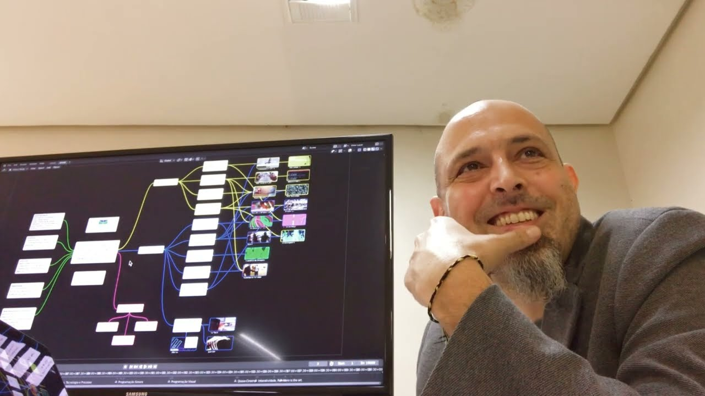

"O artista como desenvolvedor de sistemas computacionais: experiências audiovisuais"
Alexandre G. Q. RangelDoutorado em Arte e Tecnologia
Universidade de Brasília
Instituto de Artes / IdA
Departamento de Artes Visuais / VIS
Programa de Pós-Graduação em Artes Visuais / PPGAV
2019
